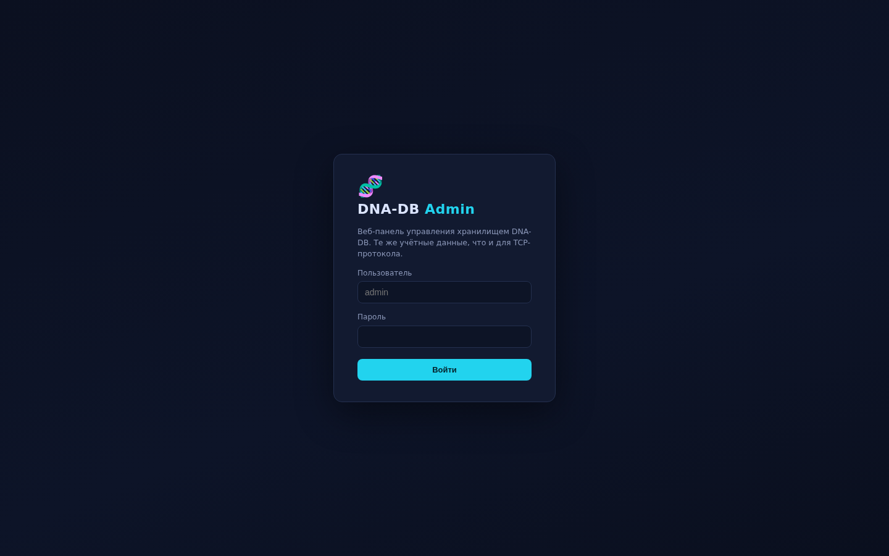
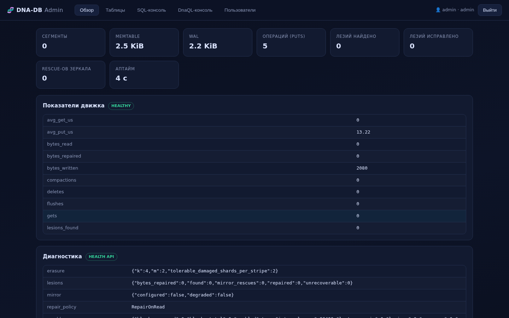
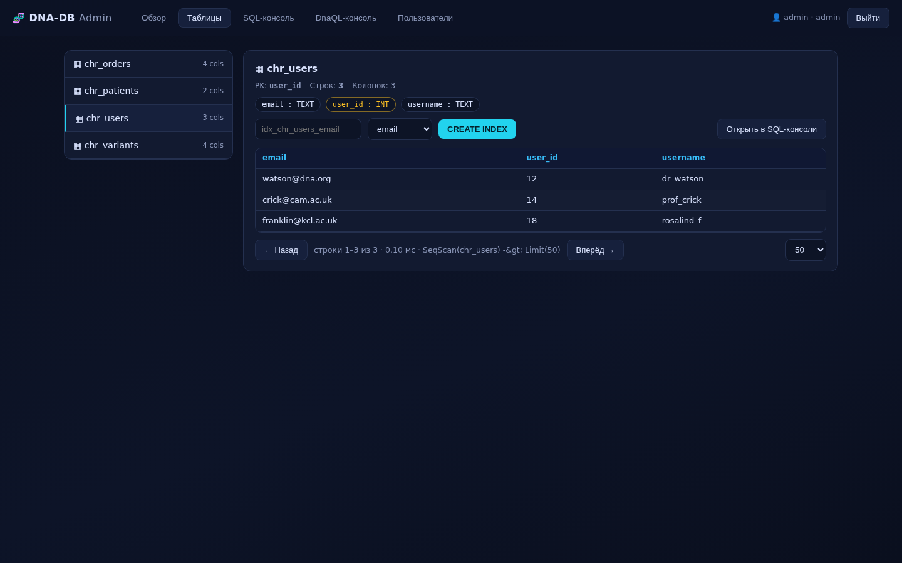
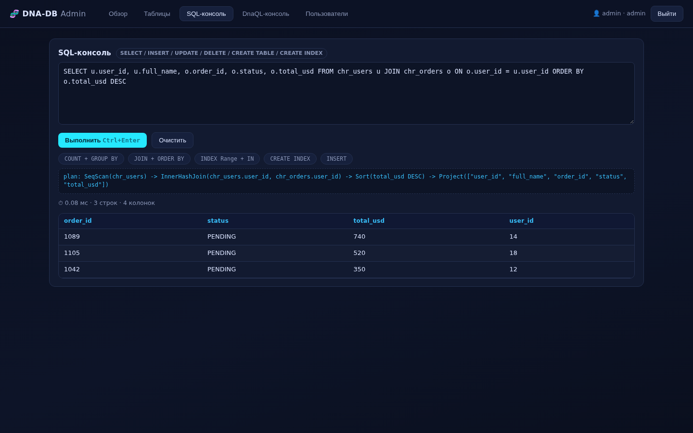
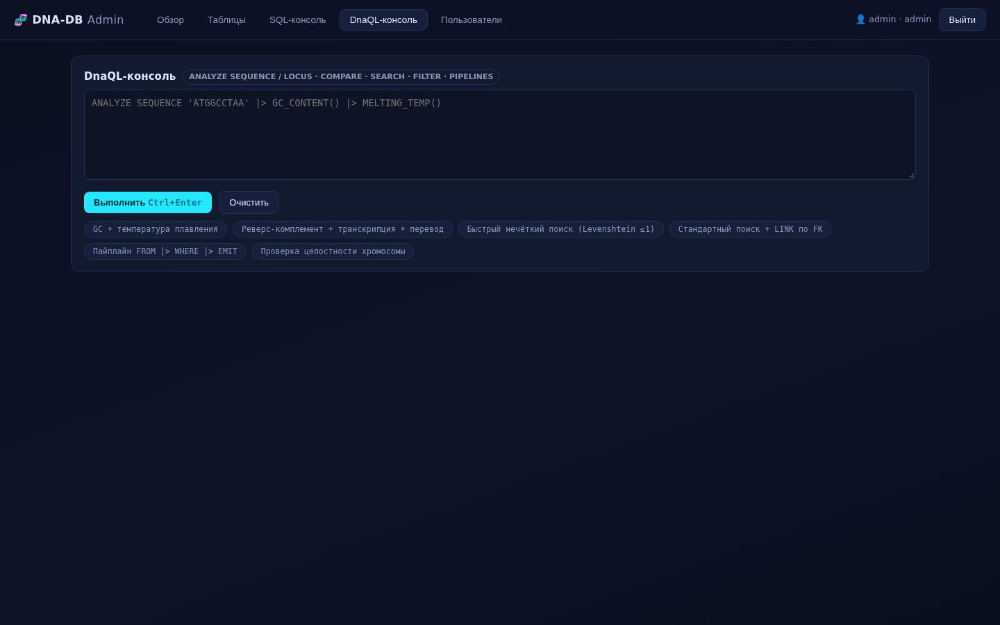
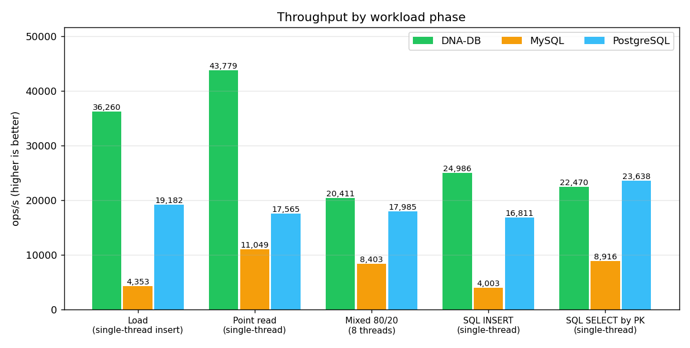
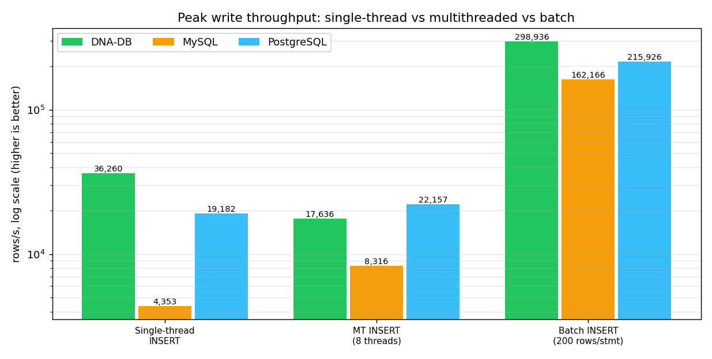
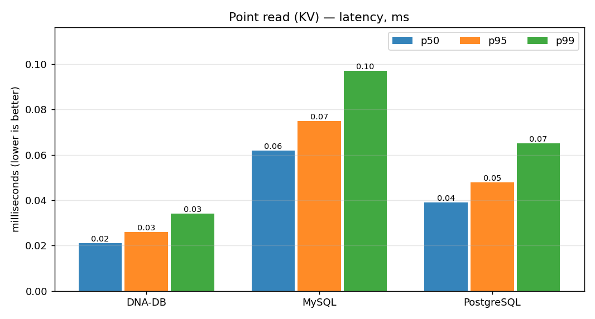
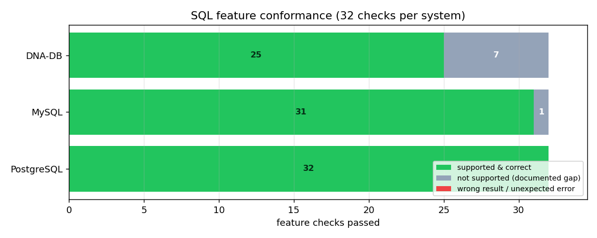

Screenshots
Админ-панель (v3.5.0)
Admin panel (v3.5.0)






Встраиваемый и клиент-серверный движок: 2-битная компрессия нуклеотидов, двухнитевое зеркалирование дисков, Рид–Соломон RS(4+2), SQL-подмножество с индексами и JOIN'ами, веб-панель управления. Закалён полным аудитом безопасности: закрыты все P0 и P1 находки. Embeddable and client/server engine: 2-bit nucleotide packing, dual-strand disk mirroring, Reed–Solomon RS(4+2), an SQL subset with indexes and JOINs, a built-in web admin panel. Hardened by a full security audit: every P0 and P1 finding closed.
Три режима fsync (strict/relaxed/off), атомарные сегменты, bloom-фильтры, tiered storage, checkpoint и компакция.
Three fsync modes (strict/relaxed/off), atomic segment writes, bloom filters, tiered storage, checkpoint and compaction.
Пайплайны |>, ANALYZE SEQUENCE/LOCUS, GC_CONTENT, MELTING_TEMP, реверс-комплемент, транскрипция, перевод, нечёткий bitap-поиск (~100 Mbp/s на ядро).
Pipelines |>, ANALYZE SEQUENCE/LOCUS, GC_CONTENT, MELTING_TEMP, reverse-complement, transcription, translation, fuzzy bitap search (~100 Mbp/s per core).
JOIN (inner/left), GROUP BY/HAVING, подзапросы IN, ORDER BY/LIMIT/OFFSET, secondary- и range-индексы, EXPLAIN-план, транзакции.
JOIN (inner/left), GROUP BY/HAVING, IN subqueries, ORDER BY/LIMIT/OFFSET, secondary & range indexes, EXPLAIN plans, transactions.
rustls TLS 1.2/1.3 на обоих слушателях, Argon2id, per-table ACL, lockout по IP/логину, XChaCha20-Poly1305 при хранении, случайный bootstrap-пароль (печатается один раз).
rustls TLS 1.2/1.3 on both listeners, Argon2id, per-table ACL, IP/username lockout, XChaCha20-Poly1305 at rest, random one-time bootstrap password.
Зеркало Strand B на внешнем диске, RS(4+2) с CRC на блоки, scrubber, doctor, ремонт на чтении; откат WAL при сбое зеркала (новое в 3.5).
Strand B mirror on an external disk, RS(4+2) with per-block CRC, scrubber, doctor, repair-on-read; WAL rollback on mirror failure (new in 3.5).
phpMyAdmin-подобная: дашборд KPI, просмотр/редактирование строк, SQL- и DnaQL-консоли с планом запроса, управление пользователями и ACL, bearer-сессии с CSP.
phpMyAdmin-style: KPI dashboard, row browsing/editing, SQL & DnaQL consoles with query plans, user & ACL management, bearer sessions with CSP.
Лимит глубины парсера + catch_unwind (защита от stack-overflow DoS), закрыты 2 ACL-байпасса, настоящий Serializable, slowloris-дедлайн, flock для doctor, проверенная арифметика.
Parser depth limit + catch_unwind (stack-overflow DoS protection), 2 ACL bypasses closed, real Serializable isolation, slowloris deadline, doctor flock, checked arithmetic.
CLI shell (в т.ч. TLS/mTLS), rotate-key без простоя, demo-data, 15 python-скриптов: smoke, security, kill -9, chaos, бенчмарки против MySQL/PostgreSQL.
CLI shell (TLS/mTLS aware), zero-downtime rotate-key, demo-data, 15 python scripts: smoke, security, kill -9, chaos, MySQL/PostgreSQL benchmarks.
Одинаковая нагрузка, ключи и последовательность RNG на всех трёх системах, у каждой — durability по умолчанию. Одна машина (Debian 13, 2 vCPU), один клиент. Прогон v3.5.0 от 2026-10-31.
Identical workload, keys and RNG sequence on all three systems, each at its default durability. Same machine (Debian 13, 2 vCPU), one client. v3.5.0 run dated 2026-10-31.
| Фаза | Phase | DNA-DB v3.5.0 | MySQL 8.4.6 | PostgreSQL 17.11 |
|---|---|---|---|---|
| Запись по одной строке (ack на каждую) | Single-row insert (ack per row) | 36 260 | 4 353 | 19 182 |
| Параллельная запись, 8 потоков | Multithreaded insert, 8 threads | 17 636 | 8 316 | 22 157 |
| Пакетный INSERT (200 строк × 40) | Batched INSERT (200 rows × 40) | 298 936 | 162 166 | 215 926 |
| Точечное чтение по ключу | Point read by key | 43 779 | 11 049 | 17 565 |
| Смешанная 80/20 (8 потоков) | Mixed 80/20 (8 threads) | 20 411 | 8 403 | 17 985 |
| SQL INSERT (3 000 строк) | SQL INSERT (3 000 rows) | 24 986 | 4 003 | 16 811 |
| SQL SELECT по PK (×1 500) | SQL SELECT by PK (×1 500) | 22 470 | 8 916 | 23 638 |
| Неверных значений при проверке | Wrong values on verification | 0 | 0 | 0 |
rows/s либо ops/s, чем больше — тем лучше. DNA-DB: --sync strict (fsync на каждый ack). MySQL: innodb_flush_log_at_trx_commit=1. PostgreSQL: synchronous_commit=on.
rows/s or ops/s, higher is better. DNA-DB: --sync strict (fsync per ack). MySQL: innodb_flush_log_at_trx_commit=1. PostgreSQL: synchronous_commit=on.




Сырые данные: bench_compare_results_v350_linux.json · методика: DB_COMPARISON_RU.md · SQL-соответствие: SQL_FEATURES_RU.md
Raw data: bench_compare_results_v350_linux.json · methodology: DB_COMPARISON.md · SQL conformance: SQL_FEATURES.md
182 unit + 2 encryption + 13 recovery, включая 11 регрессионных тестов на фиксы аудита.
182 unit + 2 encryption + 13 recovery, incl. 11 regression tests for the audit fixes.
TEST_RESULTS_RU.mdTEST_RESULTS.mdАутентификация, pre-auth guard, CRUD, кадры 1 MiB, SQL/DnaQL, checkpoint, восстановление после kill.
Auth, pre-auth guard, CRUD, 1 MiB frames, SQL/DnaQL, checkpoint, hard-kill recovery.
smoke_test_results_v350.txtСлучайный bootstrap, лимит глубины парсера, slowloris-дедлайн, отказ вторых instance и doctor на живой БД.
Random bootstrap, parser depth limit, slowloris deadline, second-instance & live-doctor refusals.
security_smoke_v350.txtПодтверждённых записей перед SIGKILL → потеряно/испорчено после перезапуска (WAL replay + ремонт torn-write).
Acknowledged writes before SIGKILL → lost/corrupt after restart (WAL replay + torn-write repair).
KILL9_TEST_RESULT_v350.txt60 повреждённых секторов офлайн и на живом сервере — 300 000 проверок ключей, 0 потерь; пере-повреждение честно помечено UNREPAIRABLE.
60 damaged sectors offline and under a live server — 300 000 key verifications, 0 losses; over-damage honestly reported UNREPAIRABLE.
chaos_results_v350.txt0 ошибок, 35 предупреждений (стиль/сложность). Ядро без unsafe.
0 errors, 35 warnings (style/complexity). No unsafe in the core.





# build (Rust 1.75+) cargo build --release # start: TLS + at-rest encryption are ON by default. # No default password: a random 24-symbol bootstrap password # is printed ONCE to stderr (must_change = true) ./target/release/dna-db-core serve \ --data-dir ./dna_data --port 9999 --admin-port 8080 # → [SECURITY] bootstrap admin (shown ONCE): admin / <random> # open the panel and change the password: https://127.0.0.1:8080/ # or set your own password explicitly: ./target/release/dna-db-core serve --data-dir ./dna_data \ --port 9999 --admin-port 8080 --admin-pass 'change-me-now' --demo-data
Полное руководство: README_RU.md · протокол: PROTOCOL.md
Full guide: README.md · protocol: PROTOCOL.md